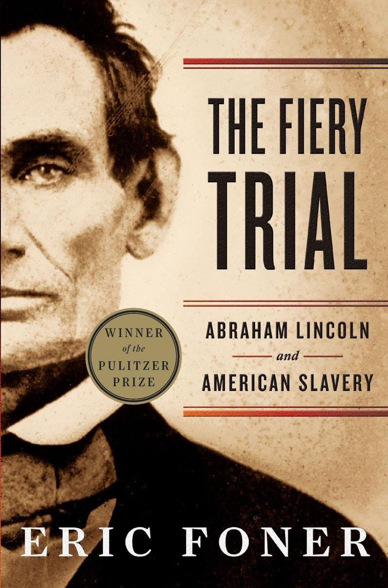

"The Fiery Trial: Abraham Lincoln and American Slavery"
- Read on 2025-12-30
- Rating: ️️️️️
- Format: 🎧 (18 hours 7 minutes)
I read this with the goal of trying to understand the development of Lincoln's character. What I find intriguing about him is that he chose to change - and publicly acknowledged his changes. I can appreciate his approach - he was open to ideas that weren't his own, and spent time with those with more experience or better insight. While he was always opposed to slavery itself, he was never an abolitionist (viewing their broader opinions as too extreme). But his stance on emancipation approaches shifted. This book also helped give more insight into some of the societal factors that may have also influenced his thinking. Additionally, it highlighted some of Lincoln's broader approach with the states in rebelion, which he always viewed as still part of the Union.